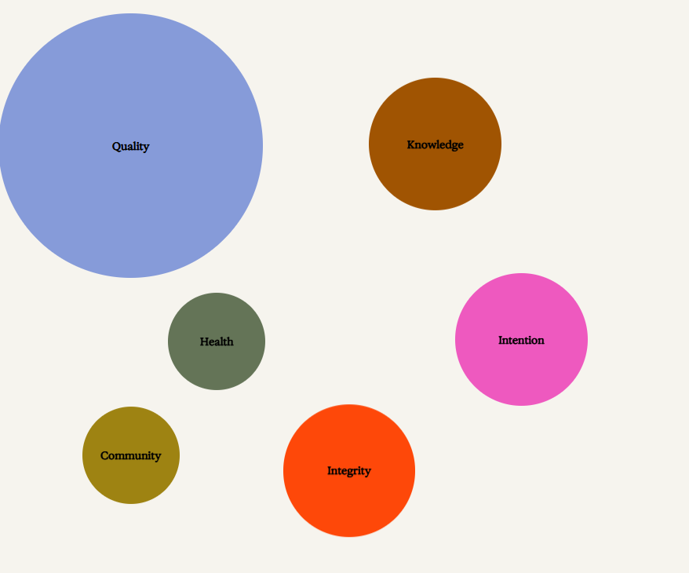

Our Story
Welcome
Rainbo is your space for optimizing your mind,
body and spirit with fungi.
We offer potent and high quality adaptogenic mushrooms
to bring radical health and harmony to people and the planet.
A note from our Founder,
Tonya Papanikolov


Rainbo was born in 2018 in my Toronto apartment after many transformative
experiences with fungi, but the spores of awareness were planted much earlier.
My journey with fungi first began in 2011 brewing mushroom tea and reconnecting
to nature in the Canadian forests. It was in this season that I knew mushrooms
would be with me for the rest of my life. They became and still are instrumental
in my healing journey, and I know they can be for yours, too.
For many years I struggled with digestive issues and immune dysregulation.
Mentally, I was anxious and in a constant cycle of stress and brain fog—in
retrospect I was existing in a general state of disconnection. After failed
attempts at feeling better via traditional western medicine, my world shifted
as I adopted mind-body practices, changed my diet and began taking mushrooms
functionally.
I created Rainbo to spread mushrooms to the masses and get people healthier and
more deeply connected to nature. Mushrooms have shown me that whole-person
healing is possible—that balance between all parts of ourselves and our social
and natural environments is within grasp.
The great metaphor of what mushrooms represent in nature is both my—and
Rainbo’s—raison d’être: resilience, cooperation, and the unfathomable magnitude
of nature’s intelligence and interconnectedness. These fungal organisms contain
some of the secrets to life as they network and weave wisdom into the collective
consciousness.
I’m so happy our journeys have converged at this moment in time because now is
the time. Thank you for being here and welcome to our Rainbo world.
Tonya Papanikolov
Holistic Nutritionist
Kundalini Yoga Practitioner
M.S Mind-Body Medicine Student
Our Manifesto
Because eventually, we’ll all go back to fungi.
This is our cosmic trip.
In through nature, out through nature. What we do in between is our calling.
Because eventually, we’ll see there was no separation—only a collective chance
for interdependence.
We are fungal advocates. We see the unseen and know the unknown.
We are human nature potentiators. The path forward to human and planetary
health is ours to hold, nourish and remember.
We are guided by

The quality of our mushrooms, our people, our supply chain and beyond is directly
connected to our quest for integrity. We opt for the highest quality, most
sustainable everything because it’s how we ensure a positive impact on people
and the planet.